케이그린텍 스마트팜
📖 제품 소개
1. 제품 정보
| 제품명 | MARO-FARM26 |
|---|---|
| 제품 종류 | 스마트팜 환경제어기 |
| 지원 채널 | 4채널 · 8채널 · 16채널 · 32채널 (최대 256채널) |
| 연동 표준 | 국가스마트팜표준 KS X 3288 — RS485 Modbus 인터페이스 |
| 제조 | 케이그린텍 |
2. 작동 원리
비닐하우스나 온실의 환경을 자동으로 조절해주는 장치입니다. 컴퓨터나 스마트팜 태블릿을 통해서 원격에서 제어가 가능하고, 센서가 측정한 값에 따라 기계가 알아서 작동하도록 해줍니다.
- 실시간 측정 (내부) — 온도, 습도, CO₂ 농도, 일사량, 토양 수분, EC/PH
- 실시간 측정 (외부) — 강우, 풍속, 외부 온도
- 자동 제어 — 측정값에 따라 천창·측창·펌프·환기팬 등을 알아서 동작
- 원격 모니터링 — 인터넷이 되는 곳이라면 스마트폰·PC로 어디서든 확인·제어
표준 미지원 센서(아날로그·1-Wire 전용 등)는 별도의 변환 모듈 없이는 등록할 수 없습니다. 새 센서 도입 전 반드시 케이그린텍에 호환 여부를 확인해 주세요.
MARO-FARM26은 RS-485 Modbus 명령으로 릴레이 모듈의 마그네트(전자접점)를 ON/OFF 시켜 현장 장비의 전원을 제어하는 방식입니다.
· 제어기 → Modbus 명령 → 릴레이 모듈 마그네트 동작 → 장비 전원선 ON/OFF
· 모터·펌프·조명 등 실제 장비의 동작·역회전·속도 조절은 현장 마그네트·인버터·컨트롤박스가 담당합니다.
따라서 장비별 정·역회전 결선·과부하 보호·열보호는 설치 시 현장 전기·기계 설비에서 처리되어야 하며, 본 제어기 설정에서는 ON/OFF 신호 채널만 지정합니다.
3. 시스템 구성도
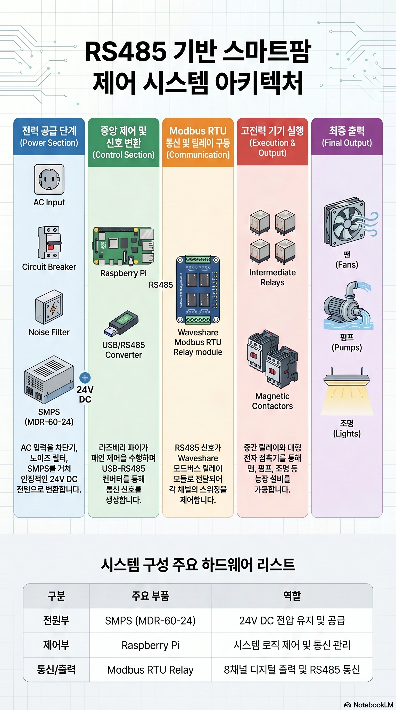
[그림 1] 농장 RPi · 센서 · 릴레이 · 클라우드 · 사용자 단말 연동도
4. 실물 사진
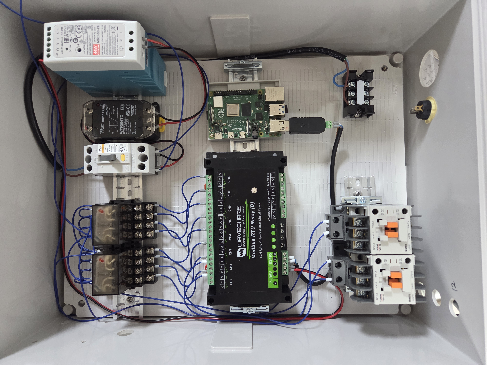
5. 주요 구성품
| 구성품 | 설명·규격 | 비고 |
|---|---|---|
| 제어기 본체 (RPi) | Raspberry Pi 4 Model B / 5 — 1.5GHz 4코어, 4~8GB RAM, 64-bit OS | USB-485 어댑터 내장 |
| 릴레이 모듈 | Waveshare RTU Relay D 8CH (또는 4/16/32CH 확장) | RS485 Modbus, FC15 coil 기반 |
| RS485 어댑터 | USB ↔ RS485 컨버터 (CH340 칩셋) | 9600 8N1 RTU-BUFFERD |
| 온습도 센서 | XY-MD02 (SHT40 칩) — 온도 ±0.3℃, 습도 ±2% | Modbus FC04, 5~30V DC |
| 제어 대상 장치 | 천창·측창·차광막·스크린·펌프·환기팬·온풍기·냉방기·CO₂공급기·분무기·관수밸브 등 | 장치별 양방향 / 단방향 제어 |
| 관리 웹앱 | 케이그린텍 클라우드 대시보드 (PWA) | 스마트폰·PC 브라우저 동일 화면 |
6. 제원
| 항목 | 제원 |
|---|---|
| 제어 채널 | 4 / 8 / 16 / 32 (최대 256, 모듈 캐스케이드) |
| 통신 (장치) | RS485 Modbus RTU · 9600 baud · 8N1 (KS X 3288 표준) |
| 통신 (서버) | AWS IoT Core MQTT (TLS 1.2) — 클라우드 양방향 제어 |
| 인터넷 | 유선 LAN 또는 Wi-Fi 2.4/5GHz — 인터넷 끊김 시 로컬 자동 전환 |
| 전원 | 5V DC 3A (RPi) + 릴레이 모듈 별도 (DC 12/24V) |
| 운영 OS | Raspberry Pi OS Bookworm/Trixie 64-bit |
| 로컬 DB | SQLite (센서 데이터 자체 저장 → 인터넷 복구 시 클라우드 동기화) |
| 데이터 수집 | 60초 주기 (조정 가능) |
| 자동화 | 센서 기반 / 시간 기반 / 사용자 정의 (혼합 조건) |
| 보안 | AWS IoT 인증서 (장치별 발급) + JWT 사용자 인증 |
| 원격 접속 | Tailscale VPN (장애 시 케이그린텍 원격 점검) |
목차
1. 시작하기 — 로그인과 앱 설치
1.1 접속 방법
케이그린텍 스마트팜은 인터넷이 되는 곳이라면 어디서든 사용할 수 있습니다. 스마트폰, 태블릿, 컴퓨터 모두 동일한 화면입니다.
| 접속 방법 | 주소 / 위치 |
|---|---|
| 스마트폰·태블릿 | 인터넷 브라우저(크롬/사파리)에서 케이그린텍이 알려드린 주소 |
| 컴퓨터 | 크롬·엣지 브라우저에서 같은 주소 |
1.2 로그인
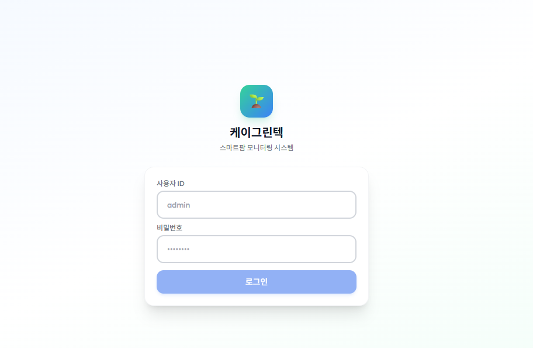
1.3 스마트폰에 앱처럼 설치하기 (PWA)
매번 주소를 입력하지 않고 홈 화면 아이콘으로 바로 열 수 있습니다.
안드로이드 (크롬)
아이폰 (사파리)
1.4 화면 둘러보기
로그인하면 화면 위쪽에 메뉴 칸이 보입니다. 권한에 따라 보이는 메뉴가 다릅니다.
| 역할 | 보이는 메뉴 |
|---|---|
| 작업자 | 대시보드 / 제어 / CCTV / 영농일지 / 보고서 / AI도우미 / 알림 |
| 농장대표 | 위 + 설정 / 관리자(=사용자 관리) |
2. 대시보드 보기
대시보드는 농장의 현재 상태를 한눈에 보는 화면입니다. 화면 위쪽 ‘대시보드’ 메뉴를 누르면 나옵니다.
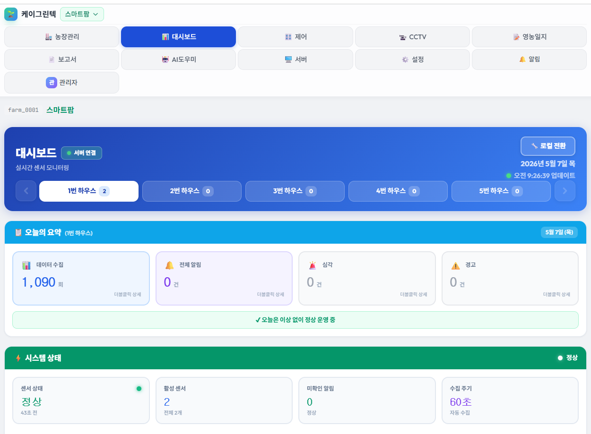
2.1 위쪽 하우스 선택
여러 하우스(동)이 있는 경우, 파란 띠 안의 ‘1번 하우스 / 2번 하우스 …’ 탭에서 보고 싶은 하우스를 누르세요. 탭 옆의 작은 숫자는 그 하우스에서 발생한 알림 개수입니다.
2.2 위젯 종류
| 위젯 | 의미 |
|---|---|
| 오늘의 요약 | 데이터 수집 건수, 전체 알림 수, 심각·경고 알림 수 — 정상이면 ‘오늘은 이상 없이 정상 운영 중’이 표시됩니다. |
| 시스템 상태 | 센서 상태(정상/경고), 활성 센서 개수, 미확인 알림, 수집 주기(예: 60초) |
| 센서 게이지 | 현재 센서 값. 색이 초록이면 정상, 노랑은 주의, 빨강은 위험 |
| 센서 차트 | 지난 24시간 동안의 변화 그래프 |
2.3 게이지 색상의 의미
3. 장치 제어
창문, 펌프, 팬, 조명 같은 장치를 직접 켜고 끌 수 있습니다.
3.1 제어 화면 들어가기
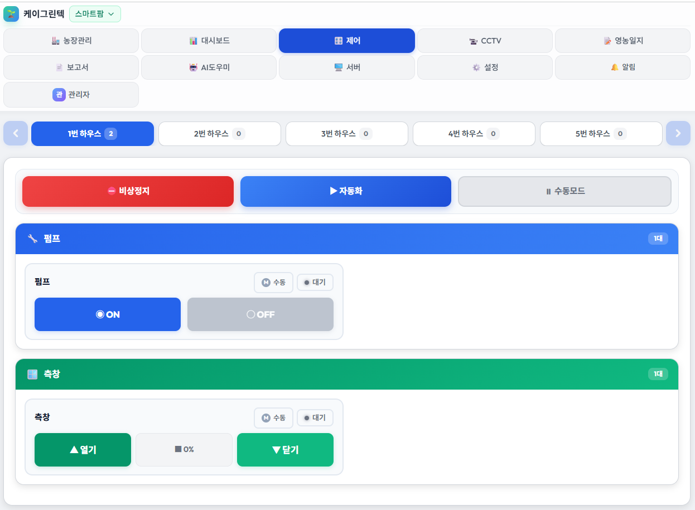
3.2 위쪽 3개 버튼
| 버튼 | 의미 |
|---|---|
| ⏹ 비상정지 | 현재 동작 중인 모든 장치를 즉시 멈춥니다. 위급 상황에만 사용. |
| ▶ 자동화 | 자동화 규칙이 동작 중임을 표시. 누르면 잠시 끄고 켤 수 있습니다. |
| ‖ 수동모드 | 자동화를 잠시 멈추고 수동으로만 조작하고 싶을 때. |
3.3 장치별 명령
| 장치 종류 | 명령 |
|---|---|
| 1창·측창·천창·차광·스크린·관수밸브 | ▲ 열기 / ■ 정지 / ▼ 닫기 — 양방향 동작 |
| 펌프·모터·조명·팬·온풍기·냉방기·CO₂공급기 | ● ON / ○ OFF |
각 장치 카드 오른쪽 위의 ‘수동’ / ‘대기’ 표시는 현재 그 장치가 자동화 대상인지 사람이 조작 중인지를 알려줍니다.
3.4 자동 정지 (창문류)
측창을 ‘▲ 열기’로 누르면 설정해 둔 시간(예: 15초)만큼만 동작하고 자동으로 정지합니다. 그 사이에도 다시 누르면 즉시 멈춥니다. 카드 가운데의 ‘0%’ 표시는 현재 몇 % 열려 있는지 보여줍니다.
3.5 진행 막대 자동 복원
창문이 동작 중일 때 페이지를 잠시 떠났다가 돌아와도, 경과 시간이 자동 계산되어 진행 막대가 이어서 보여집니다.
3.5 인터넷이 끊긴 경우
외부 인터넷이 끊겨도 같은 와이파이에 있으면 농장 내부에서 직접 제어할 수 있습니다. 화면이 ‘팜로컬 모드’로 바뀌고 제어가 정상 동작합니다.
4. 자동화 규칙
‘아침 7시에 측창 열기’, ‘온도가 30℃를 넘으면 측창 열기’ 같은 동작을 자동으로 하게 만들 수 있습니다.
4.1 규칙 만들기 농장대표 전용
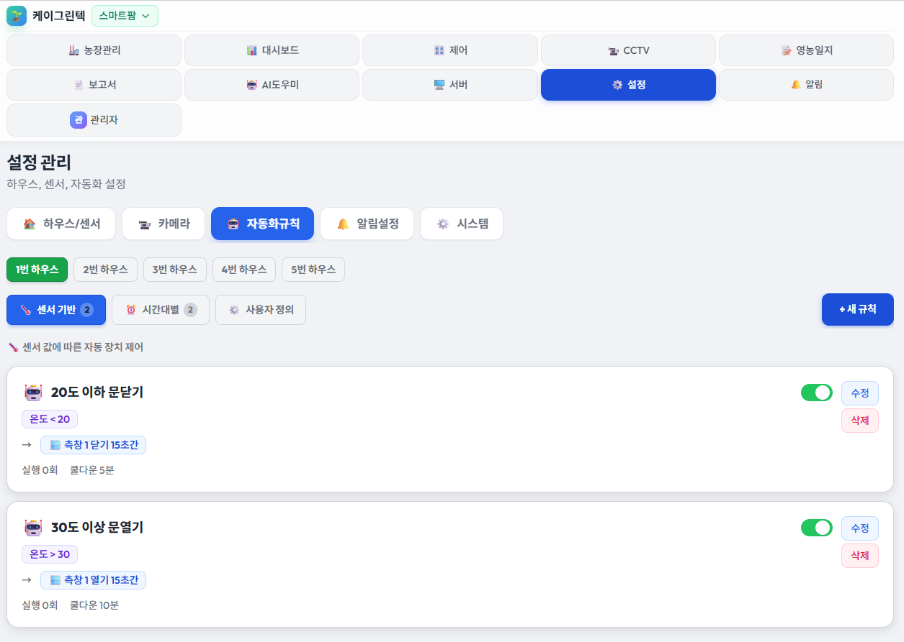
4.2 조건의 종류
| 조건 | 예시 |
|---|---|
| 센서 기반 | 온도가 30°C 초과, 습도가 60% 미만 |
| 시간대별 | 매일 06:30~07:00, 월·수·금만 |
| 사용자 정의 | ‘오후 1~5시 사이’에 ‘온도 28°C 초과’이면 (시간 + 센서 복합) |
4.3 동작의 종류
장치 제어가 가능한 모든 명령(열기/정지/닫기, 켜기/끄기)을 동작으로 지정할 수 있습니다. 한 규칙에서 여러 장치를 동시에 제어할 수도 있습니다.
4.4 우선순위와 쿨다운
| 설정 | 의미 |
|---|---|
| 우선순위 | 여러 규칙이 동시에 맞으면 우선순위가 높은 규칙이 먼저 실행 |
| 쿨다운(초) | 규칙이 한 번 실행된 후 다시 실행되기까지 기다리는 시간 (기본 300초 = 5분) |
4.5 규칙 켜기/끄기·수정·삭제
규칙 카드 오른쪽 위의 초록 토글로 잠시 멈출 수 있습니다. ‘수정’ 버튼으로 조건·동작을 바꾸고, ‘삭제’ 버튼으로 영구 제거할 수 있습니다. 계절성 규칙은 삭제하지 말고 토글로만 끄시면 다음 시즌에 다시 켤 수 있어 편합니다.
4.6 자동화 규칙 세부 화면
4.6.1 자동화 규칙 메인
등록된 규칙 목록 화면입니다. 카드별로 조건·동작·다음 실행 시간이 표시되며, 우상단 토글로 임시 비활성화 가능합니다.

4.6.2 센서 기반 규칙 만들기
센서 값(온도·습도·CO₂ 등)이 임계값을 넘거나 떨어질 때 자동 동작합니다.


설정 완료 후 규칙 카드:

4.6.3 시간 기반 규칙 만들기
매일 같은 시각에 동작합니다 (예: 06:30 측창 열기, 18:00 차광 닫기). 자정을 넘기는 구간(22:00~04:00)도 지원합니다.

설정 완료 후 규칙 카드:

4.6.4 사용자 정의 (시간 + 센서 복합)
특정 시간대에만 센서 조건을 적용합니다. 예: 오후 1~5시 사이에 온도 28°C 초과이면 천창 열기. 시간이 게이트 역할을 해서 야간엔 동작 안 함.


5. 영농일지 작성
그날의 작업, 사진, 수확량, 자재(비료·농약) 사용을 기록합니다. 친환경·GAP 인증에 필요한 항목이 미리 들어가 있어 그대로 쓰셔도 됩니다.
5.1 영농일지 화면 구성
위쪽 메뉴 ‘영농일지’ 를 누르면 5개 큰 탭이 나옵니다.
| 큰 탭 | 용도 |
|---|---|
| 📝 영농일지 | 일별 작업 기록 (가장 자주 사용) |
| 🌽 수확 | 수확량·등급·거래처 기록 |
| 💊 투입물 | 비료·농약·종자 입출고 대장 |
| 🥇 인증/관리 | 친환경/GAP 인증 관련 기록 (작기·토양 등) |
| 📊 통계 | 월별/작목별 합계와 그래프 |
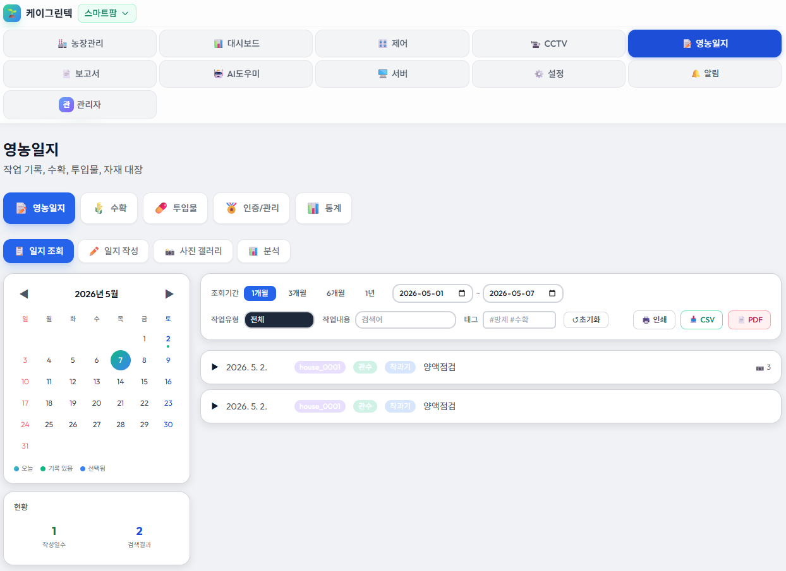
5.2 일지 쓰기
5.2 사진 첨부 — 모바일 자동 위치
스마트폰에서 사진을 추가하면 찍은 위치(GPS)가 자동으로 함께 저장됩니다. 나중에 ‘1번 하우스 동쪽 끝’ 같은 위치 검색이 가능합니다.
5.3 작목·품종 자동 매핑
설정 페이지에서 ‘작기(정식~수확 기간)’을 등록해 두면, 일지에 현재 키우는 작물 이름이 자동으로 채워집니다.
5.4 수확 기록
5.5 자재(비료·농약) 입출고
친환경 인증 농장은 자재 구매·사용·폐기를 모두 기록해야 합니다. 큰 탭에서 ‘💊 투입물’ 을 선택하세요.
| 구분 | 의미 |
|---|---|
| 입고(IN) | 구매했을 때 — 영수증 사진 첨부 권장 |
| 사용(OUT) | 실제 살포·시비했을 때 |
| 폐기(DISPOSAL) | 유통기한 지나서 버렸을 때 |
5.6 농약 사용 시 추가 항목 (PLS)
농약 종류로 등록하면 다음 항목이 추가로 나타납니다. 꼭 함께 적어주세요.
- 농약 등록번호 (라벨에 인쇄되어 있음)
- 희석 배수 (예: 1000배)
- 안전사용 일수 — 입력하면 ‘이 날 이후에 수확 가능’이 자동 계산됨
- 살포자 이름
6. AI 도우미
병해충 사진 진단, 생육 예측, 작업 추천, 농업 상담을 AI에게 시킬 수 있습니다. 위쪽 메뉴에서 ‘AI도우미’ 를 누르면 4개 탭이 나옵니다.
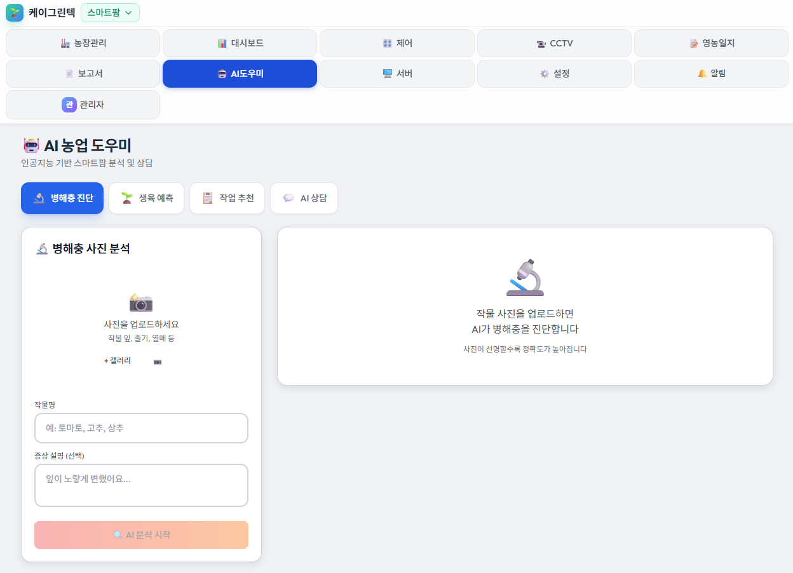
| 탭 | 용도 |
|---|---|
| 🔬 병해충 진단 | 잎·줄기·열매 사진을 올려 병해충 진단 |
| 🌱 생육 예측 | 최근 센서 데이터로 생육 단계·수확 시기 예측 |
| 📝 작업 추천 | 오늘/내일 해야 할 작업 추천 (관수·환기 등) |
| 💬 AI 상담 | 자유 채팅으로 농업 상담 |
6.1 사진으로 병해충 진단
6.2 채팅으로 묻기
예시 질문:
- “오이 흰가루병 초기 증상이 어떤가요?”
- “요즘 같은 날씨에 토마토 양액 EC는 얼마가 좋을까요?”
- “7월 살균제 추천해 주세요.”
- “지난달 영농일지에서 흰가루 의심 사진 보여줘.” (영농일지 사진 검색 가능)
7. 알림 처리
위쪽 메뉴 칸 중 ‘🔔 알림’ 에 빨간 숫자 배지가 보이면 확인할 알림이 있다는 뜻입니다.
7.1 알림의 종류
| 종류 | 의미 | 대처 |
|---|---|---|
| 센서 임계값 초과 | 온도·습도 등이 위험 범위 | 제어 페이지에서 환기·차광 조작 또는 자동화 확인 |
| 오프라인 감지 | 농장 RPi가 5분 이상 데이터 안 보냄 | 현장 인터넷·전원 확인. 12장 연락처 참고 |
| 장비 고장 의심 | 같은 장치가 반복 실패 | 현장 장치 확인 + 케이그린텍 문의 |
| 유지보수 만료 | 정기 점검 시점 도래 | 케이그린텍에 점검 요청 |
7.2 알림 빠르게 확인하기
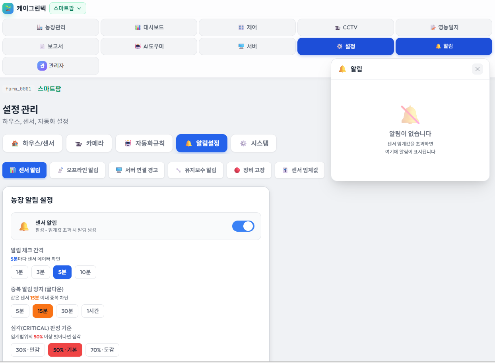
7.3 알림 이력 (전체 보기)
지나간 알림까지 모두 보고 싶으면 위쪽 메뉴에서 ‘보고서’ → ‘🔔 알림 이력’ 탭을 누르세요. 전체 / 심각 / 경고 / 확인됨 / 미확인 별로 개수가 보이고, 각 알림을 누르면 상세 내용을 확인할 수 있습니다.
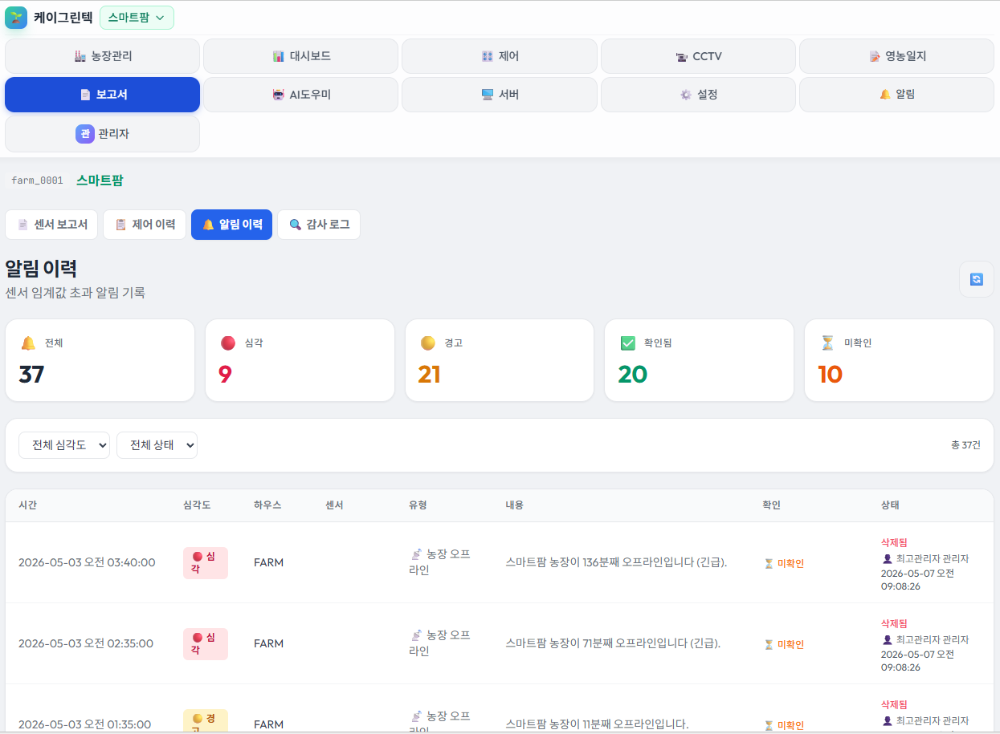
7.4 알림 설정 바꾸기 농장대표 전용
같은 알림이 너무 자주 오거나 너무 안 오면 설정에서 조정합니다.
7.5 알림 설정 세부 화면
7.5.1 일반 알림 설정
알림 종류·체크 간격·쿨다운·심각도 임계값을 조정합니다.

7.5.2 오프라인 알람
RPi가 일정 시간(기본 5분) 이상 서버에 데이터를 안 보낼 때 발생합니다. 현장 인터넷·전원 확인 신호.

7.5.3 서버 연결 경고
RPi와 케이그린텍 서버 사이 통신이 일시적으로 끊겼을 때 알림. 자동 복구되면 해제됩니다.

7.5.4 장비 고장 알람
같은 장치 명령이 반복 실패하면 ‘고장 의심’으로 분류해 알림. 워치독이 자가 진단합니다.

7.5.5 센서 임계값 알람
센서 종류별로 정상 범위를 벗어나면 알림. 임계값은 센서 등록 시 자동 설정되며 여기서 조정 가능합니다.

8. 보고서 출력
일/주/월 단위 센서 값, 제어 이력, 알림 이력을 보고서로 받을 수 있습니다.
8.1 보고서 화면 4개 탭
| 탭 | 내용 |
|---|---|
| 📄 센서 보고서 | 온도·습도·CO₂ 등 평균/최고/최저, 차트 |
| 📋 제어 이력 | 누가 언제 어떤 장치를 제어했는지 |
| 🔔 알림 이력 | 발생했던 모든 알림 (7장 참고) |
| 🔍 감사 로그 | 설정 변경 이력 |
8.2 보고서 만들기
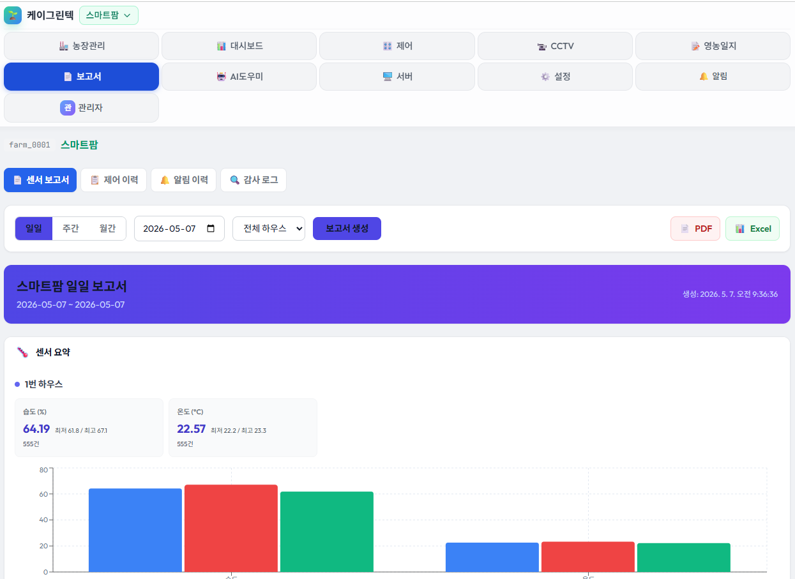
9. 설정 농장대표 전용
이 장은 농장대표 권한이 있어야 보입니다. 작업자는 이 메뉴가 보이지 않습니다.
설정 화면은 5개 탭으로 나뉩니다 — 🏠 하우스/센서 / 📷 카메라 / 🤖 자동화규칙 / 🔔 알림설정 / ⚙ 시스템. 이 장에서는 ‘하우스/센서’ 탭을 자세히 다룹니다 (자동화는 4장, 알림설정은 7.4 참고).
9.1 하우스 기본 설정
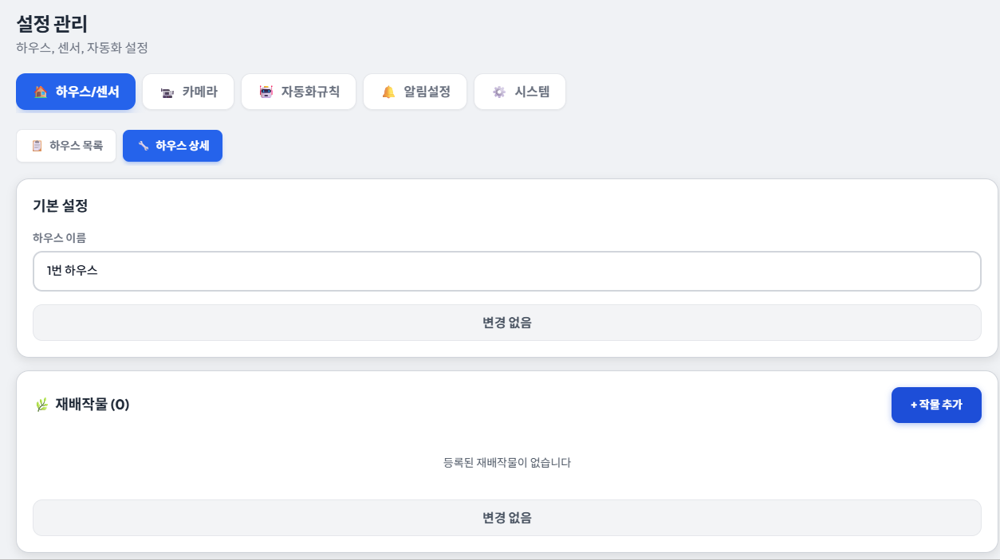
9.2 센서 추가
표준 미지원 센서(아날로그·1-Wire 전용 등)는 별도의 변환 모듈 없이는 등록할 수 없습니다. 새 센서 도입 전 반드시 케이그린텍에 호환 여부를 확인해 주세요.
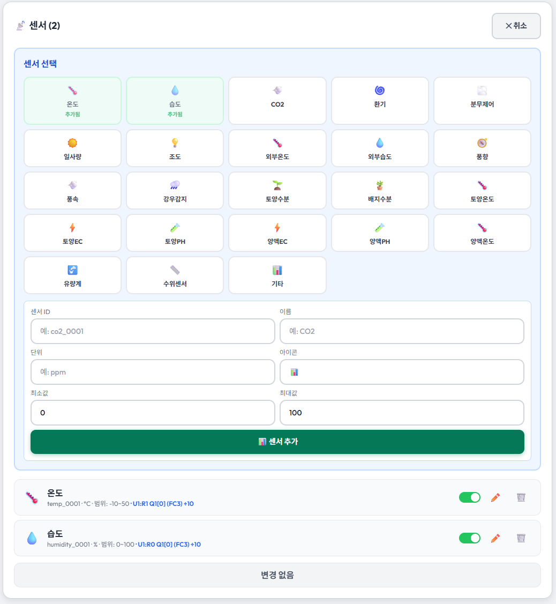
9.2.1 설정 관리 메인 화면
설정 메뉴의 첫 화면입니다. 좌측 탭에서 농장·센서·제어장치·카메라를 선택할 수 있습니다.

9.2.2 센서 추가 — 종류 선택
아이콘 카드에서 등록할 센서 종류를 누릅니다. 이미 추가된 센서는 우상단에 ‘추가됨’ 배지가 표시됩니다.

9.2.3 습도 센서 등록 예시
‘습도’ 카드를 누르면 자동으로 센서 ID(예: humid_0001)가 채워집니다. 이름·단위·범위 확인 후 ‘+ 센서 추가’.

9.2.4 온도 센서 등록 예시
온도 센서는 보통 -10 ~ 50°C 범위로 자동 설정됩니다. 정상 범위를 벗어나면 알림이 발생합니다.

9.3 제어 장치(개폐기·펌프) 등록
MARO-FARM26은 RS-485 Modbus 명령으로 릴레이 모듈의 마그네트(전자접점)를 ON/OFF 시켜 현장 장비의 전원을 제어하는 방식입니다.
· 제어기 → Modbus 명령 → 릴레이 모듈 마그네트 동작 → 장비 전원선 ON/OFF
· 모터·펌프·조명 등 실제 장비의 동작·역회전·속도 조절은 현장 마그네트·인버터·컨트롤박스가 담당합니다.
따라서 장비별 정·역회전 결선·과부하 보호·열보호는 설치 시 현장 전기·기계 설비에서 처리되어야 하며, 본 제어기 설정에서는 ON/OFF 신호 채널만 지정합니다.
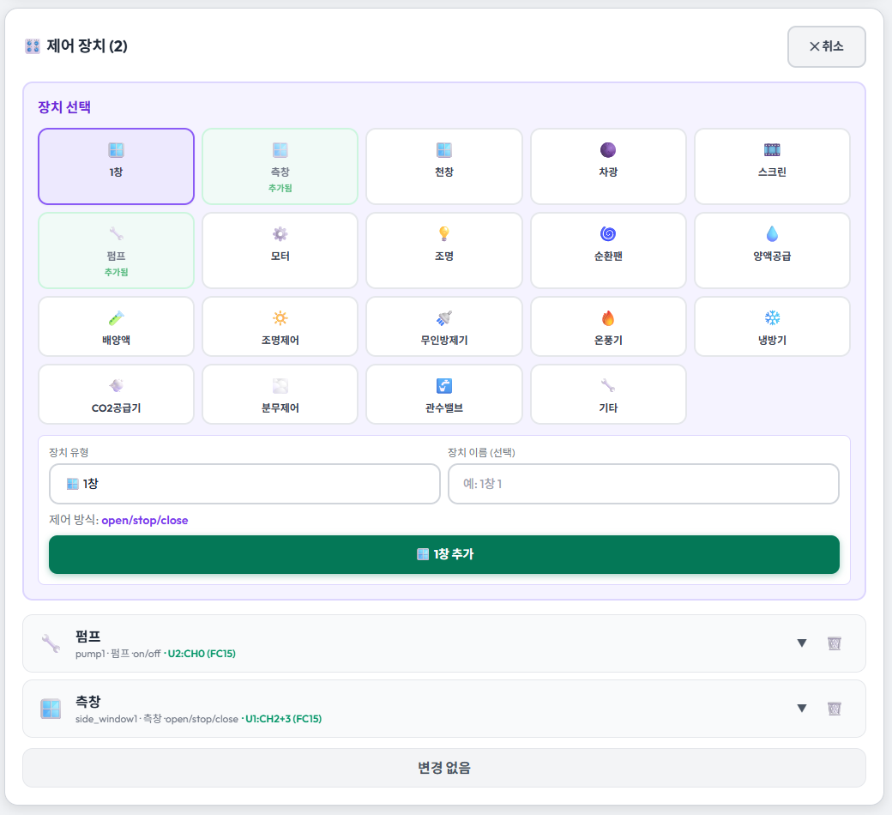
9.3.1 제어 장치 메인 화면

장치 카드를 선택하면 아래에 장치 유형·장치 이름 입력란과 Modbus 채널 설정이 나타납니다.
9.3.2 개폐기 (양방향·단방향)
천창·측창·차광·스크린은 양방향(open/stop/close) 또는 단방향(open/close) 두 가지로 등록 가능합니다. 양방향은 모터 정·역회전 두 채널을, 단방향은 한 채널만 사용합니다.
① 1창
양방향 — 정회전·역회전 채널 2개 (예: U1:CH0, U1:CH1)

단방향 — 한 채널만 사용 (열림 → 자동 정지)

② 측창


③ 천창


④ 차광


⑤ 스크린


9.3.3 단순 ON/OFF 장치
펌프·모터·조명·순환팬 등은 한 채널로 켜고 끄는 단방향 장치입니다.
⑥ 펌프

⑦ 모터

⑧ 조명

⑨ 순환팬

⑩ 무인방제기

⑪ 온풍기

⑫ 냉방기

⑬ CO₂ 공급기

⑭ 분무 제어

9.3.4 양방향 관수밸브 · 기타
⑮ 관수밸브
open/stop/close 양방향 제어 (정확한 개도 조절을 위해).

⑯ 기타
위 카테고리에 없는 장치는 ‘기타’로 등록하고 제어 방식·채널을 직접 지정합니다.

9.4 변경 사항을 RPi에 반영
센서·장치를 추가·수정한 뒤에는 화면의 ‘설정 동기화’ 또는 ‘자동화 적용’ 버튼을 눌러주세요. 현장 RPi가 새 설정을 받아가야 비로소 동작합니다.
9.5 카메라(CCTV) 등록
10. 사용자 관리 농장대표 전용
작업자 계정을 추가·삭제하고 비밀번호를 바꿉니다.
10.1 사용자 관리 화면 들어가기
위쪽 메뉴 끝의 ‘👤 관리자’ 버튼을 누르면 사용자 관리 화면이 열립니다. 화면 위쪽에 역할별 인원 수 (최고관리자·관리직원·농장대표·작업자) 가 카드로 보입니다.
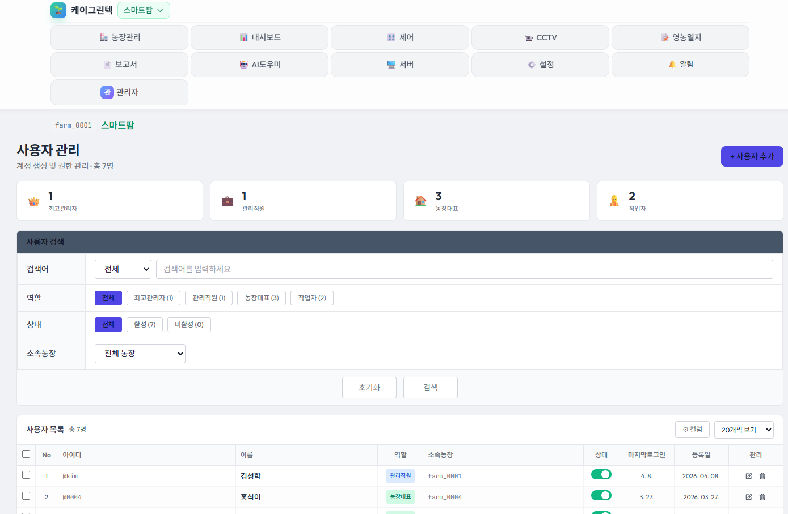
10.2 작업자 추가
10.3 사용자 검색·필터
검색창에서 아이디·이름으로 찾을 수 있고, 역할 / 상태(활성·비활성) / 소속농장 별로 거를 수도 있습니다.
10.4 비밀번호 변경
본인 비밀번호: 위쪽 메뉴 ‘관리자’ → 본인 행의 ✏ 수정 아이콘.
다른 사용자 비밀번호: 사용자 목록에서 해당 행의 ✏ 수정 → ‘비밀번호 재설정’.
비활성화: 같은 행의 토글로 잠시 로그인 차단 (퇴사·휴직 시).
10.3 권한 차이 한눈에 보기
| 화면 | 농장대표 | 작업자 |
|---|---|---|
| 대시보드 | ○ | ○ |
| 제어 | ○ | ○ |
| 자동화 규칙 | ○ | ○ |
| 영농일지 / 보고서 / AI | ○ | ○ |
| 설정 (하우스·장치) | ○ | × |
| 사용자 관리 | ○ | × |
11. 자주 묻는 질문 (FAQ)
Q1. 화면이 하얗게 나오고 안 떠요
① 화면을 새로고침합니다 (브라우저 위쪽 ↻ 버튼 또는 F5).
② 그래도 안 되면 인터넷 연결을 확인합니다.
③ ‘화면 표시 오류’ 박스가 보이면 ‘새로고침’ 버튼을 눌러주세요.
Q2. 비밀번호를 잊어버렸어요
같은 농장의 농장대표에게 ‘사용자 관리 → 비밀번호 재설정’을 요청하세요. 농장대표 본인 비밀번호를 잊은 경우는 케이그린텍에 연락 주세요.
Q3. 센서 값이 ‘--’ 로만 보여요
① 1~2분 기다려 보세요 — 일시적인 현상일 수 있습니다.
② 5분 이상 그대로면 오프라인 알림이 옵니다.
③ 농장 인터넷 공유기와 RPi(까만 박스)의 전원이 켜져 있는지 확인하세요.
④ 그래도 복구가 안 되면 12장 연락처로 문의하세요.
Q4. 제어 버튼을 눌러도 장치가 안 움직여요
① 위쪽 메뉴 ‘알림’ 버튼에 ‘오프라인’ 알림이 있는지 확인합니다.
② 같은 와이파이에 있다면 ‘팜로컬 모드’로 자동 전환되어 동작합니다.
③ 외부 인터넷·내부 와이파이 둘 다 끊긴 경우는 케이그린텍에 연락 주세요.
④ 다른 사용자가 동시에 같은 장치를 조작하면 마지막 명령만 적용됩니다.
Q5. 자동화 규칙이 작동을 안 해요
① 규칙 옆 토글이 켜짐(파란색)인지 확인합니다.
② 시간 조건은 RPi의 시간을 기준으로 합니다 — 농장 시간대 확인.
③ 쿨다운 시간 안에 있으면 다음 실행까지 기다려야 합니다.
④ 설정을 바꾼 뒤 ‘자동화 적용’ 버튼을 눌렀는지 확인합니다.
Q6. 사진을 올렸는데 위치가 안 찍혔어요
스마트폰 브라우저에서 위치 권한이 차단되어 있을 가능성이 큽니다.
① 크롬: 주소창 왼쪽 자물쇠 → ‘사이트 설정’ → ‘위치’ 허용
② 사파리: 설정 → 사파리 → ‘위치’ → 허용
Q7. 알림이 너무 많이 와요
설정 → 알림 설정에서 임계값을 조정하거나, 자주 발생하는 항목의 쿨다운을 늘려 주세요. 근본적으로는 자동화 규칙으로 환기·차광이 자동 동작하게 만들면 알림이 줄어듭니다.
Q8. 농장이 여러 곳인데 한 화면에서 보고 싶어요
화면 위쪽 ‘농장관리’ 또는 ‘농장 선택’ 드롭다운에서 농장을 전환할 수 있습니다. 한 화면에 여러 농장 비교 기능은 관리직원·최고관리자 권한에서만 제공됩니다.
Q9. 인터넷이 자주 끊기는데 데이터가 사라지나요?
아닙니다. 농장 RPi가 데이터를 자체 저장하고, 인터넷이 복구되면 자동으로 서버에 보냅니다. 영농일지·수확 기록은 작성 즉시 서버에 저장되므로 인터넷 연결이 필요합니다.
Q10. 화면이 작아서 글씨가 잘 안 보여요
브라우저에서 Ctrl + + 를 눌러 확대하세요. 스마트폰은 두 손가락으로 벌리면 확대됩니다.
12. 문제 신고와 연락처
12.1 신고하실 때 알려주실 정보
아래 정보를 함께 알려 주시면 빠르게 도와드릴 수 있습니다.
- 농장 이름 / 농장 ID (예: farm_0002)
- 발생 시간 (대략적으로)
- 어떤 화면에서 / 어떤 동작을 했을 때
- 가능하다면 화면 사진(스마트폰으로 캡처)
- 인터넷·전원 상태 (점검해 보셨다면)
12.2 연락처
| 구분 | 연락처 |
|---|---|
| 전화 | 070-5043-8158 |
| 이메일 | ijy@k-greentech.com |
| 홈페이지 | https://www.k-greentech.com/ |
| 주소 | 경기도 안양시 만안구 전파로 53 (태광산업 별관), 303B |
12.3 정기 점검 권장 주기
| 항목 | 권장 주기 |
|---|---|
| 센서 보정 (특히 EC·pH) | 3개월 |
| 창문 모터·체인 점검 | 6개월 |
| RPi·릴레이 박스 청소 | 6개월 |
| 비밀번호 변경 | 6개월 |
| 전체 시스템 점검 (케이그린텍) | 12개월 |
케이그린텍 스마트팜 사용자 매뉴얼 v1.0 · 2026년 5월
본 매뉴얼은 케이그린텍의 자산이며, 무단 복제·배포를 금합니다.